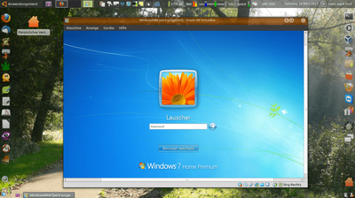

Dualboot-Windows virtualisieren
Dieser Artikel wurde für die folgenden Ubuntu-Versionen getestet:
Ubuntu 16.04 Xenial Xerus
Ubuntu 14.04 Trusty Tahr
Zum Verständnis dieses Artikels sind folgende Seiten hilfreich:

Dieser Artikel beschreibt die Möglichkeit, ein bereits auf der Festplatte installiertes (und im Dualboot auswählbares) Windows in einem Fenster von VirtualBox in Ubuntu starten und nutzen zu können. Dadurch hat man dieselben installierten Programme, Daten und Einstellungen in beiden Varianten zur Verfügung, und kann unter Ubuntu die parallel installierte Windows-Umgebung aufrufen.
Auch andere Parallelsysteme, wie z.B. ein weiteres parallel installiertes Ubuntu, können auf diese Weise in VirtualBox genutzt werden. Siehe dazu die Hinweise unter Andere Parallelsysteme.

Sicherheitswarnung¶
Achtung!
Es wird eine Sicherungskopie des zu virtualisierenden Systems empfohlen.
Es ist ein Fall bekannt, in dem VirtualBox und/oder Ubuntu abgestürzt sind, während ein "virtualisiertes" Windows aktiv auf die Festplatte zugriff. Dies führte zur irreparablen Beschädigung des Windows-Systems.
Solange das Parallelsystem in VirtualBox läuft, darf von Ubuntu aus kein schreibender Zugriff auf dessen Partition(en) erfolgen. Dies kann zu Datenkorruption führen. Eine Möglichkeit zur Absicherung ist es, in der Datei /etc/fstab den Zugriff von Ubuntu auf die Gastsystem-Partitionen auf Nur-Lesen-Rechte zu begrenzen. Dazu editiert man /etc/fstab in einem Editor mit Root-Rechten[4]
Für jede Windows-Systempartition ist folgender Eintrag hinzuzufügen (Als Beispiel mit sda1 (System-reserviert) und sda2 (System)):
/dev/sda1 /mnt/boot ntfs ro,nosuid,nodev,nofail,x-gvfs-show 0 0 /dev/sda2 /mnt/system ntfs ro,nosuid,nodev,nofail,x-gvfs-show 0 0
Für Dateiaustausch kann die Funktion "Gemeinsame Ordner" von VirtualBox genutzt werden.
Windows vorbereiten¶
Hinweis:
Dieser Artikel wurde mit Windows 7 64-Bit, Windows 8.1 und Windows 10 getestet.
Für Windows 8 und Windows 10 kann die Einschränkung gelten, daß es im VM-Betrieb nicht mit dem Internet verbunden werden darf und mindestens einmal im Monat im normalen Dualboot gestartet werden muß. Dies ist der Fall, wenn es eine Datei /sys/firmware/acpi/tables/MSDM gibt. Erklärung siehe Angleichung Virtuell an Physikalisch.
Treibervorbereitung: Windows 7¶
Im Ordner C:\WINDOWS\system32\drivers müssen folgende vier Dateien zu finden sein:
atapi.sys
intelide.sys
pciide.sys
pciidex.sys
Fehlen sie dort, müssen sie gesucht und nach C:\WINDOWS\system32\drivers kopiert werden. Die Dateien liegen in einem Unterordner von C:\WINDOWS\system32\DriverStore\FileRepository, notfalls mit Hilfe der Suchfunktion des Explorers aufspüren. (In der Regel liegen bei Windows 7 die benötigten Treiber bereits im oben genannten Verzeichnis).
Das Skript MergeIDE.reg trägt die obigen Treiber in der Windows-Registry ein.
Eine Sicherungskopie von der Windows-Registry-Datei C:\WINDOWS\system32\config\SYSTEM machen mittels "Ausführen... →
regedit→ Datei → Exportieren".MergeIDE.zip

 herunterladen, entpacken und MergeIDE.reg per Doppelklick ausführen.
herunterladen, entpacken und MergeIDE.reg per Doppelklick ausführen.
Experten-Info:
Das Skript MergeIDE.reg stammt von Microsoft  und wurde ursprünglich für XP entwickelt. Es hat sich als hilfreich und kompatibel für Windows 7 erwiesen. Ob es für Windows 8 oder 10 benötigt wird, ist noch ungeprüft. Die Batch-Datei MergeIDE.bat stammt vom c't-Magazin und ist unbrauchbar.
und wurde ursprünglich für XP entwickelt. Es hat sich als hilfreich und kompatibel für Windows 7 erwiesen. Ob es für Windows 8 oder 10 benötigt wird, ist noch ungeprüft. Die Batch-Datei MergeIDE.bat stammt vom c't-Magazin und ist unbrauchbar.
Windows Produkt-Aktivierung¶
Windows verlangt bei erheblicher Veränderung seiner Hardwareumgebung eine neue Produktaktivierung bei Microsoft per Internet oder Telefon.
Der Betrieb in VirtualBox bedeutet für Windows eine solche erhebliche Veränderung.
Bei abwechselndem Betrieb in VirtualBox oder im Dualboot-Start würde das bedeuten, dass bei jedem Wechsel eine neue Produktaktivierung notwendig wird. Dies wird durch die Angleichung der virtuellen Hardware an die physikalische Hardware zu vermeiden gesucht.
Windows 7 hat sich regelmäßig erfolgreich virtualisieren lassen und konnte uneingeschränkt in VirtualBox genutzt werden.
Windows 8 und 10 kann unter Umständen nur ohne Internetverbindung virtualisiert werden, ansonsten wird innerhalb von VirtualBox die Verwendung blockiert, und es wechselt in den Status "Nicht aktiviert". Physikalisch läßt es sich auch dann problemlos wieder starten und mit Internet nutzen, der Status wird automatisch wieder auf "Aktiviert" gesetzt. Erklärung siehe Angleichung Virtuell an Physikalisch.
Eine Gewähr dafür, dass keine neue Produktaktivierung fällig wird, kann natürlich trotzdem nicht gegeben werden.
Product Key¶
Mit dem Programm pkeyui läßt sich der Product Key von Windows anzeigen. Es ist sinnvoll, diesen Key auf einem Zettel zu notieren.
Daten zur Produktaktivierung sichern¶
Windows 7, 8.0 : Mit Hilfe des Programmes Advanced Tokens Manager
ein Backup der Aktivierungsdaten machen.Windows 8.1: Für Windows 8.1 kann bisher nur eine telefonische Aktivierung gesichert und wiederhergestellt werden, mit Hilfe des Advanced Tokens Manager
.Windows 10: Vermutlich gilt dasselbe wie für Windows 8.1: Nur eine telefonische Aktivierung kann gesichert werden.
Produktaktivierung wiederherstellen¶
Sollte es durch den Betrieb von Windows in VirtualBox dazu kommen, dass eine neue Produktaktivierung fällig wird, so kann man mit Hilfe dieser Dateien zumindest für den physikalischen Betrieb den aktivierten Zustand wiederherstellen. In diesem Fall wird so vorgegangen:
Windows 7, 8.0: Mit Hilfe des Programms Advanced Tokens Manager den aktivierten Zustand wiederherstellen.
8.1, 10: Wiederherstellung mit Advanced Tokens Manager, falls telefonisch aktiviert. Ansonsten nur Wiederherstellung mit Hilfe des Supports von Microsoft, ggf. automatisch online, schlimmstenfalls telefonisch.
Windows 8 / 10: Produktaktivierung hinauszögern¶
OEM-Versionen von Windows 8 und 10 können in VirtualBox ohne Internetverbindung einige Tage genutzt werden, bevor sie in den Status "Nicht aktiviert" wechseln. Durch einen physikalischen Start wird der Status "Aktiviert" wieder hergestellt. Erklärung siehe Angleichung Virtuell an Physikalisch. Die Frist zur ungestörten Nutzung in der VM kann auf 30 Tage verlängert werden, wenn in der Eingabeaufforderung von Windows diese Befehle ausgeführt werden:
slmgr /sai 43200 slmgr /sri 43200
EFI vorbereiten¶
Neue Computer werden statt mit dem klassischen BIOS oft mit dem neueren (U)EFI gestartet. Ob der eigene Rechner per BIOS oder per EFI startet kann mit diesem Befehl geprüft werden:
[ -d /sys/firmware/efi ] && echo UEFI || echo BIOS
Startet der Computer mit EFI, muß "Secure Boot" und "Schnellstart" deaktiviert werden:
Secure Boot deaktivieren¶
Das Abschalten von Secure Boot wird beschrieben im Artikel EFI Grundlagen.
Schnellstart deaktivieren¶
Windows 8, 10: Schnellstart bei Windows 8 deaktivieren
.Windows 7:
Eingabeaufforderung -> "Als Admin ausführen".
powercfg /h offeingeben.
Im EFI-BIOS fast-boot auf [ "Disabled" ] setzen.
Aktuelle VirtualBox-Version installieren¶
Die in den Paketquellen enthaltene Version von VirtualBox ist oft nicht auf dem neuesten Stand. Einige der verwendeten VirtualBox-Funktionen sind noch experimentell. Deshalb wird empfohlen, stets die aktuellste Version von VirtualBox zu verwenden, mindestens aber Version 4.2. Möglichkeiten der Installation aus Fremdquellen (Oracle) sind unter VirtualBox/Installation beschrieben.
Experten-Info:
VirtualBox befindet sich in steter Weiterentwicklung. Einige der in diesem Artikel verwendeten Funktionen sind noch nicht Teil des offiziellen Supports, sondern befinden sich in Erprobungsphase. Bei Problemen mit solchen Funktionen besteht kein Anspruch auf Support von Oracle ; Oracle ist aber selbst an Rückmeldung und Support interessiert.
Virtuelle Maschine erstellen¶
VirtualBox starten [5]
Neue virtuelle Maschine erstellen: "Neu → Weiter".
Name "WindowsRAW" (andernfalls Skripte und Terminalbefehle anpassen) und Art des Betriebssystems einstellen "→ Weiter".
Arbeitsspeicher zuweisen "→ Weiter". (Der physikalische Speicher muss für beide Systeme aufgeteilt werden, für beide muss genug zur Verfügung stehen).
Kein Festplattenmedium wählen.
"Virtuelle Maschine erzeugen → Weiter". Die virtuelle Maschine wird nun erstellt.
Auf "Ändern" klicken, um weitere Einstellungen vorzunehmen.
Unter "System" "IO-APIC" aktivieren (Häkchen setzen).
EFI: Wenn das System mit (U)EFI statt mit BIOS startet, muß unter "System" "EFI aktivieren" aktiviert werden (Häkchen setzen)
Unter "Ändern → Netzwerk → Erweitert" die Option "Kabel verbunden" abschalten. (Häkchen entfernen).
Sinnvoll ist es, den virtuellen Grafikkartenspeicher unter "Anzeige" zu erhöhen.
Experten-Info:
Im Ordner ~/VirtualBox VMs liegen die virtuellen Maschinen von VirtualBox. Es ist ein neues Unterverzeichnis WindowsRAW entstanden. Darin werden die zugehörigen Dateien versammelt. Neu entstanden ist WindowsRAW.vbox, das die Konfiguration der VM enthält.
Festplattenzugriff vorbereiten¶
Windows-Partitionen ermitteln¶
Bevor Sie beginnen stellen Sie bitte sicher, dass die Festplatte oder Partition auf der sich Windows befindet nicht im System eingehangen ist.
Es wird ermittelt, auf welchen Festplatten und Partitionen Windows installiert ist: [3]
sudo parted -l
Die gefundenen Festplatten und ihre Partitionen werden ausgegeben. Dies kann bspw. so aussehen:
Disk /dev/sda: 1000GB Sector size (logical/physical): 512B/4096B Partition Table: gpt Number Start End Size File system Name Flags 1 1049kB 420MB 419MB ntfs Basic data partition hidden, diag 2 420MB 735MB 315MB fat32 EFI system partition boot 3 735MB 869MB 134MB Microsoft reserved partition msftres 4 869MB 299GB 298GB ntfs Basic data partition 6 299GB 299GB 400MB ext4 7 299GB 301GB 1400MB linux-swap(v1) 8 301GB 481GB 180GB ext4 9 481GB 980GB 500GB ext4 5 980GB 1000GB 19.9GB ntfs Basic data partition hidden, diag
Windows befindet sich in diesem Beispiel auf der Festplatte /dev/sda.
Die Windows belegt in diesem Beispiel diese Festplatten-Partitionen:
Nummer 1: "Basic data partition" (ntfs). Entspricht in diesem Beispiel /dev/sda1
Nummer 3: "Microsoft reserved partition" (ntfs). Entspricht in diesem Beispiel /dev/sda3
Nummer 4: "Basic data partition" (ntfs). Entspricht in diesem Beispiel /dev/sda4
Nummer 5: "Basic data partition" (ntfs). Entspricht in diesem Beispiel devsda5
Die EFI-Bootpartition trägt hier die Nummer 2. Entspricht in diesem Beispiel /dev/sda2
Die Partition 6,7,8 und 9 (ext4 und swap) sind in diesem Beispiel Ubuntu-Partitionen
Bootloader erzeugen¶
Der Bootloader mbr dient als Alternative zu GRUB, um damit Windows in VirtualBox booten zu können. [1]
mbr (universe, bis Ubuntu 11.04 main)
 mit apturl
mit apturl
Paketliste zum Kopieren:
sudo apt-get install mbr
sudo aptitude install mbr
Es wird eine Bootloader-Datei WindowsRAW.mbr erzeugt: [3]
install-mbr --force ~/VirtualBox\ VMs/WindowsRAW/WindowsRAW.mbr
Benötigt wird der Wert von disk identifier der Bootfestplatte, in der Regel /dev/sda. Er wird angezeigt beim Aufruf von:
sudo fdisk -l
In diese Datei wird mit folgendem Befehl der Wert von disk identifier (in der deutschen Version Medienkennung)eingetragen. Dabei FESTPLATTENIDENTIFIKATION durch den entsprechenden Wert ersetzen:
echo FESTPLATTENIDENTIFIKATION | sed -e 's/0x\(..\)\(..\)\(..\)\(..\)/0x\4\3\2\1/' | xxd -r | dd of=~/VirtualBox\ VMs/WindowsRAW/WindowsRAW.mbr bs=1 seek=440 conv=notrunc
Unter Umständen kann die Ausführung des Befehls einige Minuten dauern.
Verweis auf Festplatte erzeugen¶
Tatsächlich notwendig sind nur die elementaren Systempartition(en) des zu virtualisierenden Parallelsystems. Bei einem EFI-System muß auch die EFI-Partition mit eingebunden werden.
WIN_PARTITIONmuss durch die Nummer(n) der Windows-Partition(en) ersetzt werden.Im Falle von /dev/sda1 wird
1eingesetzt, im Falle von /dev/sda2 wird2eingesetzt usw. Sollen mehrere Partitionen eingebunden werden, wird z.B.1,2,3eingesetzt für /dev/sda1, /dev/sda2 und dev/sda3.Sollte sich Windows auf einer M2-SSD befinden, so müssen hier trotzdem die Endnummern angegeben werden. So wird beispielsweise im Falle /dev/nvme0n1p1 auch nur eine
1eingesetzt, auch wenn die Partion auf p1 endet..Auch
-rawdisk /dev/sdamuss ggf. angepasst werden, wenn Windows auf einer anderen Festplatte liegt (siehe Windows-Partitionen ermitteln): [3]
Mit folgendem Befehl wird ein Verweis auf die physikalische Festplatte erzeugt:
sudo VBoxManage internalcommands createrawvmdk -filename ~/VirtualBox\ VMs/WindowsRAW/WindowsRAW.vmdk -rawdisk /dev/sda -partitions WIN_PARTITION -mbr ~/VirtualBox\ VMs/WindowsRAW/WindowsRAW.mbr -relative
Die Besitzrechte der von VBoxManage erzeugten Dateien müssen nun auf den aktuellen Benutzer übertragen werden: [3]
sudo chown $USER ~/VirtualBox\ VMs/WindowsRAW/WindowsRAW.vmdk sudo chown $USER ~/VirtualBox\ VMs/WindowsRAW/WindowsRAW-pt.vmdk
Sollten mehrere Nutzer den Computer und die VM nutzen können, ist es sinnvoll den chown Befehl abzuändern:
sudo chown $USER:vboxusers ~/VirtualBox\ VMs/WindowsRAW/WindowsRAW.vmdk sudo chown $USER:vboxusers ~/VirtualBox\ VMs/WindowsRAW/WindowsRAW-pt.vmdk
Experten-Info:
Windows hat nur auf die mittels -partitions freigegebenen Partitionen Zugriff. Zwar sieht Windows alle Partitionen der unter -rawdisk angegebenen Festplatte, kann auf diesen jedoch nur Nullen lesen und nicht schreiben.
Sollte Windows eine Festplatte für sich haben, ist es unter Umständen daher sinnvoll alle Partitionen der Festplatte anzugeben.
Optional: Zusätzliche Festplattenverweise¶
Analog zum obigen Vorgehen können zusätzliche Festplattenverweise erzeugt werden. Der virtuelle MBR sollte Verwendung finden. Das verringert die Gefahr der Zerstörung des physikalischen Bootsektors (und damit meist GRUB).
Beispiel 1: Partitionen einer anderen Festplatte
Für die Partitionen /dev/sdb2 und /dev/sdb4 auf der Festplatte /dev/sdb lautet der Befehl:
sudo VBoxManage internalcommands createrawvmdk -filename ~/VirtualBox\ VMs/WindowsRAW/WindowsRAW_sdb.vmdk -rawdisk /dev/sdb -partitions 2,4 -mbr ~/VirtualBox\ VMs/WindowsRAW/WindowsRAW.mbr -relative
Beispiel 2: Vollständige andere Festplatte
Für die gesamte Festplatte /dev/sdc lautet der Befehl:
sudo VBoxManage internalcommands createrawvmdk -filename ~/VirtualBox\ VMs/WindowsRAW/WindowsRAW_sdc.vmdk -rawdisk /dev/sdc -mbr ~/VirtualBox\ VMs/WindowsRAW/WindowsRAW.mbr
Die Rechte müssen auch hier korrekt vergeben werden.
Zugriffsrechte erteilen¶
Mit Root-Rechten [4] wird im Verzeichnis /etc/udev/rules.d eine Datei mit dem Namen VBoxWindowsRAW.rules angelegt.
In diese Datei wird eine udev-Regel eingetragen. Dafür gibt es zwei mögliche Varianten zur Auswahl.
KERNEL==sda1muss ggf. angepasst werden, wenn Windows auf anderen Partition(en) liegt (siehe Windows-Partitionen ermitteln).Für jede Partition wird eine Zeile eingetragen.
Variante 1: (Für BENUTZER den eigenen Benutzernamen eintragen)
# Zugriffsrechte für VirtualBox raw disk access # Nur Benutzer BENUTZER kann direkt auf sda1 zugreifen # KERNEL=="sda1", OWNER="BENUTZER", MODE="0664"
Variante 2:
# Zugriffsrechte für VirtualBox raw disk access # Nur Gruppe vboxusers kann direkt auf sda1 zugreifen # KERNEL=="sda1", GROUP="vboxusers", MODE="0664"
Zusatzbeispiele:
# Zugriffsrechte für VirtualBox raw disk access # Nur Gruppe vboxusers kann direkt auf die Partitionen sdb2 und sdb4 sowie auf die gesamte Festplatte sdc zugreifen # KERNEL=="sdb2", GROUP="vboxusers", MODE="0664" KERNEL=="sdb4", GROUP="vboxusers", MODE="0664" KERNEL=="sdc", GROUP="vboxusers", MODE="0664"
Natürlich sind auch Kombinationen von Nutzer und Gruppe möglich.
Experten-Info:
VirtualBox benötigt für RAW-Festplatten Lese-, als auch Schreibzugriff. Andernfalls kann es vorkommen, dass VirtualBox auf das Medium nicht zugreifen kann und im Medienmanager einen Fehler ausgibt, der im ersten Moment auf fehlende Dateiberechtigungen für die oben erstellten vmdk-Dateien schließen lassen würde.
Durch einen Systemneustart oder mit folgendem Befehl wird die Rechtevergabe wirksam gemacht: [3]
sudo udevadm trigger
(Im Zweifelsfall neu starten, der Befehl scheint nicht immer erfolgreich zu sein.)
Festplattenverweis einhängen¶
Das Einhängen und Aushängen von Speichermedien ist unter "WindowsRAW → Ändern → Massenspeicher" möglich. Dort werden auch virtuelle SATA- und IDE-Controller verwaltet.
Für Windows 7 / 8 / 10 werden Festplatten und CD/DVD-Laufwerke gewöhnlich am virtuellen SATA-Controller eingehangen.
Gibt es Bootprobleme, kann es helfen, den virtuellen IDE-Controller zu verwenden. (Zusätzlich kann es helfen, den IDE-Controller auf ICH6 zu setzen).
An den gewählten Einhängepunkt wird ~/VirtualBox VMs/WindowsRAW/WindowsRAW.vmdk eingehangen.
Angleichung Virtuell an Physikalisch¶
Die folgenden Unterpunkte dienen dazu, die virtuellen Hardwaredaten den physikalischen Daten des Computers weitmöglichst anzugleichen.
Dieser Aufwand dient allein dem Zweck, die Produktneuaktivierung von Windows zu vermeiden.
Für andere Parallelsysteme als Windows kann darauf verzichtet und beim nächsten Schritt weitergemacht werden.
Vorinstallierte OEM-Versionen von Windows 8 und Windows 10 enthalten im BIOS meist eine MSDM-Tabelle, die der Hardwareerkennung dient. Ob der eigene Rechner eine MSDM-Tabelle enthält, kann man in Ubuntu sehen, indem man nachschaut, ob es eine Datei /sys/firmware/acpi/tables/MSDM gibt. Wenn das der Fall ist, reichen die virtuellen Hardwareanpassungen dieses Artikels nicht aus, um Windows uneingeschränkt in VirtualBox nutzen zu können. Daher kann bei nächsten Schritt weitergemacht werden. Die Einschränkungen sind:
Im virtuellen Betrieb darf keine Internetverbindung für Windows hergestellt werden.
Mindestens einmal im Monat muß Windows physikalisch im Dualboot gestartet werden.
Experten-Info:
Für Überprüfung und Korrektur der Angleichung gibt es mehrere Möglichkeiten:
Die Skripte tragen die ermittelten Werte in die Datei WindowsRAW.vbox ein. Dort kann man nachsehen.
WindowsRAW.vbox bitte nicht editieren! Eintragungen können durch Setzen von
""statt z.B."<EMPTY>"entfernt werden. Veränderungen sind nur mit Hilfe vonVBoxManagezulässig.Wenn eine Ubuntu Desktop-CD in WindowsRAW gebootet wird, kann z.B. mit Hilfe von
dmidecodevieles überprüft werden. Vgl. auch die Problembehebung, ganz am Ende, zum Thema "Produktaktivierung".Es gibt auch ein dmidecode für Windows
. In der Eingabeaufforderung von Windows zeigt es dieselbe Ausgabe wie von Ubuntu her bekannt.
Jede Version (und ihre Installationsvarianten) von Windows haben verschiedene Schwerpunkte in der "Hardwarebewertung" der "Identitätsprüfung" des Computers. (Hinweise dazu in den Links). Einige scheinen allen mehr oder minder gemeinsam zu sein. Besonders wichtige Hardwaredaten sind:
DmiSystemUuid (
dmidecode -t1)Seriennummer der Festplatte
Hardwareadressen der Netzwerkadapter
SLIC-Tabelle (nur Windows 7 sowie per Update von Vista/7 installiertes 8 oder 10)
DmiBoard-Parameter (
dmidecode -t2)Neu seit Windows 8 ist die MSDM-Tabelle. Diese ist komplexer aufgebaut als ihr Vorgänger SLIC. Sie enthält einen Hardware-Hash, der aus nicht öffentlich bekannten Eigenschaften der Hardware berechnet wird und dient der möglichst eindeutigen Wiedererkennung des Rechners. Der Schwerpunkt der Prüfung soll auf dem Mainboard liegen. Die virtuellen Hardwareanpassungen dieses Artikels reichen nicht aus, um diesem Hardware-Hash zu entsprechen. Mögliche Ansätze zur noch besseren virtuellen Hardwareangleichung werden in der Diskussion zum Artikel beschrieben.
SLIC-Tabelle¶
Die OEM-Versionen von Windows 7, also vom Hardwarehersteller vorinstallierte Windowsversionen, lesen aus dem BIOS die SLIC-Tabelle aus, um zu überprüfen, ob sie auf dem "richtigen" Rechner installiert sind. Wurde von Windows 7 ein Update auf Windows 8 oder 10 gemacht, wird die SLIC-Tabelle auch ausgelesen.
Ob der eigene Rechner eine SLIC-Tabelle enthält, kann man in Ubuntu sehen, indem man nachschaut, ob es eine Datei /sys/firmware/acpi/tables/SLIC gibt.
OEM-Versionen von Windows 8 und 10 enthalten statt der SLIC-Tabelle meist eine MSDM-Tabelle. Sie kann genauso ausgelesen und eingebunden werden wie die SLIC-Tabelle. Leider genügt das nicht, um die Produktneuaktivierung zu vermeiden.
Sollte sich auf Ihrem Rechner weder eine MSDM-, noch eine SLIC-Tabelle befinden, können Sie sich ohne Probleme dem nächsten Abschnitt widmen.
Die SLIC-Tabelle wird ausgelesen und anschließend die Besitzrechte auf den aktuellen Benutzer übertragen: [3]
sudo dd if=/sys/firmware/acpi/tables/SLIC of=~/VirtualBox\ VMs/WindowsRAW/WindowsRAW_SLIC.bin sudo chown $USER ~/VirtualBox\ VMs/WindowsRAW/WindowsRAW_SLIC.bin
Die Datei ~/VirtualBox VMs/WindowsRAW/WindowsRAW_SLIC.bin sollte exakt 374 Byte groß sein.
Die SLIC-Tabelle wird eingebunden mit dem Befehl: [3]
VBoxManage setextradata "WindowsRAW" "VBoxInternal/Devices/acpi/0/Config/CustomTable" "$HOME/VirtualBox VMs/WindowsRAW/WindowsRAW_SLIC.bin"
Virtuelle BIOS-Daten angleichen¶
Es werden einige physikalische BIOS-Daten benötigt: [3]
sudo dmidecode -t0
Die Ausgabe kann z.B. so aussehen:
# dmidecode 2.9
SMBIOS 2.3 present.
Handle 0x0000, DMI type 0, 20 bytes
BIOS Information
Vendor: Phoenix Technologies LTD
Version: R01-A0T
Release Date: 05/25/2005
Address: 0xE63F0
Runtime Size: 105488 bytes
ROM Size: 512 kB
Characteristics:
ISA is supported
[...]
Bios Revision: 2.3
Firmware Revision: 2.3Außerdem:
sudo dmidecode -t1
Die Ausgabe kann z.B. so aussehen:
# dmidecode 2.9
SMBIOS 2.3 present.
Handle 0x0001, DMI type 1, 25 bytes
System Information
Manufacturer: 0001
Product Name: WIM 2050
Version:
Serial Number: System serial number
UUID: 20202020-2020-2020-2020-202020202020
Wake-up Type: Power Switch
Family: To be filled by O.E.M.Des weiteren werden die Werte von dmidecode -t2, dmidecode -t3, dmidecode -t4 und dmidecode -t11 benötigt,
Es wird ein Skript mit dem Namen WindowsRAW_BIOS.sh erstellt, das die wichtigsten BIOS-Daten in die Konfiguration der virtuellen Maschine überträgt. Das Skript nicht wie gegeben ausführen, sondern den eben ermittelten Daten gemäß anpassen! [6]
Sind
Bios RevisionundFirmware Revisionnicht angegeben, werden die Werte vonSMBIOSverwendet.Auch unsinnig erscheinende Einträge müssen wörtlich übernommen werden.
Leere oder nicht erscheinende Einträge werden mit
"<EMPTY>"eingetragen.Bei einem (U)EFI-System muß die Variable
CFG_PATHangepaßt werden (#vorCFG_PATHentfernen).
Das Skript wird einmal ausgeführt und danach nicht mehr benötigt:
1 2 3 4 5 6 7 8 9 10 11 12 13 14 15 16 17 18 19 20 21 22 23 24 25 26 27 28 29 30 31 32 33 34 35 36 37 38 39 40 41 42 | #! /bin/bash VM_NAME="WindowsRAW" # Name der Virtuellen Maschine VSETED="VBoxManage setextradata $VM_NAME" CFG_PATH="VBoxInternal/Devices/pcbios/0/Config" # klassisches BIOS-System # CFG_PATH="VBoxInternal/Devices/efi/0/Config" # EFI-System $VSETED $CFG_PATH/DmiBIOSVendor "string:Phoenix Technologies LTD" # "Vendor" aus "dmidecode -t0" $VSETED $CFG_PATH/DmiBIOSVersion "string:R01-A0T" # "Version" aus "dmidecode -t0" $VSETED $CFG_PATH/DmiBIOSReleaseDate "string:05/25/2005" # "Release Date" aus "dmidecode -t0" $VSETED $CFG_PATH/DmiBIOSReleaseMajor "2" # "Bios Revision 1. Zahl" aus "dmidecode -t0" $VSETED $CFG_PATH/DmiBIOSReleaseMinor "3" # "Bios Revision 2. Zahl" aus "dmidecode -t0" $VSETED $CFG_PATH/DmiBIOSFirmwareMajor "2" # "Firmware Revision 1. Zahl" aus "dmidecode -t0" $VSETED $CFG_PATH/DmiBIOSFirmwareMinor "3" # "Firmware Revision 2. Zahl" aus "dmidecode -t0" $VSETED $CFG_PATH/DmiSystemVendor "string:0001" # "Manufacturer" aus "dmidecode -t1" $VSETED $CFG_PATH/DmiSystemProduct "string:WIM 2050" # "Product Name" aus "dmidecode -t1" $VSETED $CFG_PATH/DmiSystemVersion "<EMPTY>" # "Version" aus "dmidecode -t1" $VSETED $CFG_PATH/DmiSystemSerial "string:System serial number" # "Serial Number" aus "dmidecode -t1" $VSETED $CFG_PATH/DmiSystemSKU "<EMPTY>" # "SKU Number" aus "dmidecode -t1" $VSETED $CFG_PATH/DmiSystemUuid "string:20202020-2020-2020-2020-202020202020" # "UUID" aus "dmidecode -t1" $VSETED $CFG_PATH/DmiSystemFamily "string:To be filled by O.E.M." # "Family" aus "dmidecode -t1" $VSETED $CFG_PATH/DmiBoardVendor "string:Notebook" # "Manufacturer" aus "dmidecode -t2" $VSETED $CFG_PATH/DmiBoardProduct "string:WIM 2050" # "Product Name" aus "dmidecode -t2" $VSETED $CFG_PATH/DmiBoardVersion "string:Rev.A" # "Version" aus "dmidecode -t2" $VSETED $CFG_PATH/DmiBoardSerial "<EMPTY>" # "Serial Number" aus "dmidecode -t2" $VSETED $CFG_PATH/DmiBoardAssetTag "string:asset" # "Asset Tag" aus "dmidecode -t2" $VSETED $CFG_PATH/DmiBoardBoardType "1234" # "Type" aus "dmidecode -t2", muss eine Zahl (Integer) oder "" sein $VSETED $CFG_PATH/DmiBoardLocInChass "string:locinchass" # "Location in Chassis" aus "dmidecode -t2" $VSETED $CFG_PATH/DmiChassisAssetTag "<EMPTY>" # "Asset Tag" aus "dmidecode -t3" $VSETED $CFG_PATH/DmiChassisSerial "<EMPTY>" # "Serial Number" aus "dmidecode -t3" $VSETED $CFG_PATH/DmiChassisVendor "string:Medion" # "Manufacturer" aus "dmidecode -t3" $VSETED $CFG_PATH/DmiChassisVersion "string:N/A" # "Version" aus "dmidecode -t3" $VSETED $CFG_PATH/DmiChassisType "1234" # "Type" aus "dmidecode -t3", muss eine Zahl (Integer) oder "" sein $VSETED $CFG_PATH/DmiProcManufacturer "string:Intel" # "Manufacturer" aus "dmidecode -t4" $VSETED $CFG_PATH/DmiProcVersion "string:Intel(R) Pentium(R) M processor" # "Version" aus "dmidecode -t4" $VSETED $CFG_PATH/DmiOEMVBoxVer "string:SMBIOS 2.3" # "String 1" aus "dmidecode -t11" $VSETED $CFG_PATH/DmiOEMVBoxRev "string:Customer Reference Platform" # "String 2" aus "dmidecode -t11" |
Hinweis:
Sollte VirtualBox später für einen Parameter der mit <EMPTY> belegt ist einen Fehler ausgeben, bearbeiten Sie das Skript so, dass der bemängelte Wert einen sinnvollen Wert besitzt und führen Sie es erneut aus.
Wenn zum Beispiel dmidecode -t0 keinen Parameter Firmware Revision angibt, so können Sie dort auch die Werte von Bios Revision nutzen.
Virtuelle Festplattendaten angleichen¶
Es werden einige Daten zur Festplatte benötigt. /dev/sda muss ggf. angepasst werden, wenn Windows z.B.
auf der /dev/sdb-Platte liegt (siehe Windows-Partitionen ermitteln): [3]
sudo hdparm -i /dev/sda
Die Ausgabe kann z.B. so aussehen:
/dev/sda: Model=WDC WD1200BEVE-00WZT0, FwRev=01.01A01, SerialNo=WD-WX60A89E4748 [...]
Bei neueren Systemen (vor allem, wenn eine M2-SSD-Festplatte genutzt wird) kann es vorkommen, dass hdparm den Fehler HDIO_GET_IDENTITY failed: Inappropriate ioctl for device ausgibt. Sollte dies der Fall sein, installieren Sie das Package
nvme-cli (xenial/universe)
mit apturl
Paketliste zum Kopieren:
sudo apt-get install nvme-cli
sudo aptitude install nvme-cli
und führen Sie den folgenden Befehl aus:
sudo nvme list
Beispielsweise kann die Ausgabe so aussehen:
Node SN Model Version Namespace Usage Format FW Rev ---------------- -------------------- ---------------------------------------- -------- --------- -------------------------- ---------------- -------- /dev/nvme0n1 S2GLNCAGC14199E Samsung SSD 950 PRO 256GB 1.1 1 59,24 GB / 256,06 GB 512 B + 0 B 1B0QBXX7
Die ermittelten Daten zur
Model,FwRevundSerialNo(bzw. SN) müssen in das folgende Skript WindowsRAW_HD.sh eingetragen werden.Im Skript wird davon ausgegangen, dass die Festplatte am virtuellen Primary Master des virtuellen IDE-Controllers eingehangen wurde. Ansonsten ggf. anpassen.
Das Skript wird einmal ausgeführt und danach nicht mehr benötigt[6].
1 2 3 4 5 6 7 8 9 10 11 12 13 14 15 | #! /bin/bash VM_NAME="WindowsRAW" # Name der Virtuellen Maschine VSETED="VBoxManage setextradata $VM_NAME" CFG_PATH="VBoxInternal/Devices/piix3ide/0/Config/PrimaryMaster" # (Festplatte hängt am Primary Master vom virtuellen IDE-Controller) # CFG_PATH="VBoxInternal/Devices/piix3ide/0/Config/SecundaryMaster" # (Alternativ: Festplatte hängt am Secundary Master vom virtuellen IDE-Controller) # CFG_PATH="VBoxInternal/Devices/piix3ide/0/Config/PrimarySlave" # (Alternativ: Festplatte hängt am Primary Slave vom virtuellen IDE-Controller) # CFG_PATH="VBoxInternal/Devices/piix3ide/0/Config/SecundarySlave" # (Alternativ: Festplatte hängt am Secundary Slave vom virtuellen IDE-Controller) # CFG_PATH="VBoxInternal/Devices/ahci/0/Config/Port0" # (Alternativ: Festplatte hängt am Port 0 vom virtuellen SATA-Controller) # CFG_PATH="VBoxInternal/Devices/ahci/0/Config/Port1" # (Alternativ: Festplatte hängt am Port 1 vom virtuellen SATA-Controller) # CFG_PATH="VBoxInternal/Devices/ahci/0/Config/Port2" # (Alternativ: Festplatte hängt am Port 2 vom virtuellen SATA-Controller) $VSETED $CFG_PATH/ModelNumber "string:WDC WD1200BEVE-00WZT0" # "Model" aus "hdparm -i /dev/sda" $VSETED $CFG_PATH/FirmwareRevision "string:01.01A01" # "FwRev" aus "hdparm -i /dev/sda" $VSETED $CFG_PATH/SerialNumber "string:WD-WX60A89E4748" # "SerialNo" aus "hdparm -i /dev/sda" |
Virtuelles CD/DVD-Laufwerk angleichen¶
Wenn ein physikalisches CD/DVD-Laufwerk vorliegt, muss ein virtuelles CD/DVD-Laufwerk am virtuellen SATA-Controller eingehangen werden. (Es ist zwar möglich, auch an den virtuellen IDE-Controller CD/DVD-Laufwerke einzuhängen, für diese können die Hardwaredaten aber nicht verändert werden.)
An den virtuellen SATA-Controller wird nun ein CD/DVD-Laufwerk eingehangen, falls noch nicht vorhanden.
Sind mehrere physikalische CD/DVD-Laufwerke angeschlossen, müssen auch für diese virtuelle CD/DVD-Laufwerke eingehangen und angepasst werden.
Es werden Angaben zum physikalischen CD/DVD-Laufwerk benötigt:
cdrecord -scanbus
Die Ausgabe kann z.B. so aussehen:
scsibus1:
1,0,0 100) 'Optiarc ' 'DVD RW AD-7710H ' '1.S0' Removable CD-ROM
1,1,0 101) *
[...]Die drei nach
100)stehenden Werte werden in das folgende Skript WindowsRAW_CD.sh eingetragen.Im Skript wird davon ausgegangen, dass das CD/DVD-Laufwerk am ersten Port (= Port 0) vom virtuellen SATA-Controller eingehangen wurde, ansonsten ggf. anpassen.
Sind am Rechner mehrere CD/DVD-Laufwerke, müssen auch für diese virtuelle CD/DVD-Laufwerke eingerichtet und angepasst werden.
Das Skript wird einmal ausgeführt und danach nicht mehr benötigt. [6]
1 2 3 4 5 6 7 8 9 10 11 12 | #!/bin/bash VM_NAME="WindowsRAW" # Name der Virtuellen Maschine VSETED="VBoxManage setextradata $VM_NAME" PORT="Port0" # CD/DVD-Laufwerk hängt am ersten Port (=Port 0) vom virtuellen SATA-Controller # PORT="Port1" # (Alternativ: CD/DVD-Laufwerk hängt am zweiten Port (=Port 1) vom virtuellen SATA-Controller) # PORT="Port2" # (Alternativ: CD/DVD-Laufwerk hängt am dritten Port (=Port 2) vom virtuellen SATA-Controller) CFG_PATH="VBoxInternal/Devices/ahci/0/Config/$PORT" $VSETED $CFG_PATH/ATAPIVendorId "string:Optiarc" # Erster Wert (Hersteller) $VSETED $CFG_PATH/ATAPIProductId "string:DVD RW AD-7710H" # Zweiter Wert (Modell) $VSETED $CFG_PATH/ATAPIRevision "string:1.S0" # Dritter Wert (Versionsnummer) |
Hinweis:
Sollte Ihr Rechner kein optisches Laufwerk besitzen, so können Sie trotzdem ohne Gefahr ein virtuelles Laufwerk über VirtualBox einhängen. (Getestet mit Windows 10 - 25.07.2017)
MAC-Adressen der virtuellen Netzwerkadapter angleichen¶
Es werden die MAC-Adressen der physikalischen Netzwerkadapter benötigt. Dieser Befehl listet alle Netzwerkadapter und ihre Hardwareadressen auf: [3]
ifconfig -a
Die Ausgabe kann so aussehen:
eth0 Link encap:Ethernet Hardware Adresse 00:0a:e4:a3:ed:8a
[...]
Die Hardwareadresse wird (ohne ":") in "VirtualBox → WindowsRAW → Ändern → Netzwerk → Erweitert → Mac-Adresse" eingegeben.
Für alle ermittelten Netzwerkadapter wird in VirtualBox ein Netzwerkadapter aktiviert und die jeweilige MAC-Adresse eingegeben.
ppp0undlohaben keine MAC-Adresse und werden hier auch nicht benötigt.Für den Betrieb nicht benötigte Netzwerkverbindungen können durch Entfernen des Häkchens bei "Kabel verbunden" vom Host getrennt werden.
Setzen Sie das Häkchen nun bei benötigten Verbindungen. (HINWEISE ZU MSDM-TABELLEN BEACHTEN!)
Erster Start von Windows in VirtualBox¶
Windows erstmals in VirtualBox starten.
Es kann sein, dass das erste virtuelle Starten sehr lange dauert. Auch kann für längere Zeit ein nur schwarzer Bildschirm sichtbar sein. Geduldig sein, Windows schaut sich in der neuen Hardwareumgebung um und braucht Zeit.
Sollte Windows nicht komplett hochfahren, siehe Abschnitt Problembehebung.
Windows bemerkt, dass sich die Hardware verändert hat und bietet an, viele neue Treiber zu installieren. Alle Angebote ablehnen, stattdessen die Gasterweiterungen von VirtualBox installieren. Die Gasterweiterungen scheinen im normalen Dualboot-Betrieb keine Probleme zu machen.
Windows neu starten.
Windows sollte nun virtuell und physikalisch problemlos starten, ohne eine neue Produktaktivierung zu verlangen.
Für Windows 7 kann nun die Internetverbindung in VirtualBox aktiviert werden. Dafür unter "Ändern → Netzwerk → Erweitert" die Option "Kabel verbunden" anschalten. (Häkchen setzen).
Für Windows 8 und Windows 10 darf die Internetverbindung nicht aktiviert werden, falls das BIOS eine MSDM-Tabelle enthält. Es verweigert dann die Mitarbeit und muß heruntergefahren werden.
Andere Parallelsysteme¶
Dieser Artikel kann analog auch auf andere parallel installierte Betriebssysteme als Windows angewendet werden. Die Schritte Windows vorbereiten und Virtuelle Hardware der physikalischen Hardware angleichen können dann übergangen werden.
Es können dabei insbesondere Treiberprobleme durch die abweichende virtuelle Hardware auftreten, die Betriebssystem-spezifisch zu lösen sind. Oft handelt es sich primär um Grafikkartentreiber-Probleme.
Die Gasterweiterungen von VirtualBox, die für viele Betriebssysteme angeboten werden, können einen Großteil dieser Probleme beheben.
Es kann, je nach System, nötig sein, für den jeweiligen physikalischen oder virtuellen Start verschiedene Konfigurationen zu verwenden. Diese können z.B. durch ein Skript, das während des Bootens ausgeführt wird, vorgenommen werden. (Beispiel: In einem Test mit Ubuntu 7.04 zeigte sich, dass zwei Varianten der Datei /etc/X11/Xorg.conf nötig waren, eine von VirtualBox bei Installation der Gasterweiterungen angelegte, und das Original, von dem VirtualBox ein Backup angelegt hatte.)
Eine Möglichkeit zu erkennen, ob das System in VirtualBox gestartet wurde, ist das Überprüfen des Grafikadapters.
lspcienthält dann die AusgabeVirtualBox Graphics Adapter.Manche Systeme haben Probleme mit der "IO-APIC"-Option, die im Schritt Virtuelle Maschine erstellen aktiviert wurde. Auch kann "IO-APIC" die Performance verschlechtern. Versuchsweise kann "IO-APIC" deaktiviert werden.
Achtung!
Es darf niemals das aktuell laufende Betriebssystem in VirtualBox gestartet werden! Das führt zur totalen Zerstörung des Systems.
Durch Treiberanpassungen für den virtuellen Betrieb kann es dazu kommen, dass das System bei einem normalen physikalischen Start Probleme bekommt. Dies kann auch bei Verwendung der VirtualBox-Gasterweiterungen passieren.
Parallelsysteme mit systemd¶
Die meisten Linux Distributionen sind in den letzten Jahren von SysVinit zu systemd gewechselt. Wenn beim Bootvorgang in fstab eingetragene Partitionen nicht gefunden werden, bleibt der Bootvorgang mit systemd stehen. Für Partitionen, die im Parallelsystem in /etc/fstab eingetragen sind, aber nicht in die VM eingebunden werden sollen, muß im Parallelsystem die Datei /etc/fstab angepaßt werden. Die mount-Optionen der betroffenen Partitionen müssen ergänzt werden um die Option nofail. Um den entstehenden timeout von 90 Sekunden beim Bootvorgang auf 1 Sekunde abzukürzen, wird außerdem x-systemd.device-timeout=1 eingetragen. Beispiel:
UUID=5713b814-354b-84d7-9c40-307475c55c57 none swap sw,nofail,x-systemd.device-timeout=1 0 0
Paralleles Ubuntu¶
Ein parallel installiertes aktuelles Ubuntu lässt sich erfreulich unproblematisch mit VirtualBox starten. Es erkennt beim Booten selbständig, dass es in einer virtuellen Umgebung gestartet wird, und passt sich dem an. Der Bootvorgang dauert dabei etwas länger als gewohnt (getestet mit Ubuntu 10.04 und Xubuntu 11.10).
Virtuellen MBR durch GRUB ersetzen¶
Zum ersten Booten braucht es z.B. die Super Grub2 Disk
Um das Grub-Auswahlmenü auf das virtualisierte System zu begrenzen, wird innerhalb des virtualisierten Systems
sudo update-grubausgeführt. Dabei wird die physikalische Datei /boot/grub/grub.cfg auf der virtuell genutzten physikalischen Partition überschrieben.Um Grub in den virtuellen Bootsektor zu installieren, wird innerhalb des virtualisierten Systems
sudo grub-install /dev/sdaausgeführt (/dev/sdamuss ggf. angepasst werden).
Gasterweiterungen¶
Die Gasterweiterungen können über "Geräte → Gasterweiterungen installieren" als CD eingelegt werden. Installiert wird durch Ausführen von autorun.sh.
Nach einem Kernel-Update des virtualisierten Systems müssen die Gasterweiterungen neu installiert werden.
Gemeinsame Ordner¶
Zum Benutzen der Funktion "Gemeinsame Ordner" von VirtualBox muss der Benutzer (innerhalb des virtualisierten Ubuntu) der Gruppe
vboxsfbeitreten, z.B. mittelssudo adduser $USER vboxsf. Damit die Änderung wirksam wird, muss der virtuelle Benutzer sich ab- und wieder anmelden.Permanent erzeugte gemeinsame Ordner werden von VirtualBox nach einem virtuellen Systemneustart automatisch eingebunden unter /media/sf_ORDNERNAME. Details und Varianten siehe VirtualBox Manual: Shared folders
.
Einschränkungen¶
Es darf nicht dieselbe SWAP-Partition wie die vom Host verwendet werden. Als eine mögliche Alternative kann eine Swap-Auslagerungsdatei angelegt werden.
Es ist auch über die Funktion "Gemeinsame Ordner" nicht möglich, dieselben Konfigurationsdateien aus /home zu nutzen wie der Host.
Ubuntu in Windows¶
Um Ubuntu in VirtualBox in Windows zu starten, wird wie folgt vorgegangen:
Für den direkten Festplattenzugriff ("raw disk access") werden Zugriffsrechte benötigt. Eine Möglichkeit ist es, die folgenden Befehle und Programme als Administrator zu starten.
Ein Verweis auf die Festplatte, auf der Ubuntu installiert ist, wird erzeugt. Dabei muss
HARDDISKersetzt werden durch den Windows-Pfad zur physikalischen Festplatte, z.B.\\.\PhysicalDrive0oder\\.\PhysicalDrive1, undMEINPFADdurch den gewünschten Dateipfad. Ausgeführt wird der Befehl unter "Start → Programme → Zubehör → Eingabeaufforderung".cd C:\Programme\Oracle\VirtualBox VBoxManage internalcommands createrawvmdk -filename "C:\MEINPFAD\UbuntuRAW.vmdk" -rawdisk HARDDISK
VirtualBox starten, eine VM erzeugen, UbuntuRAW.vmdk als Festplatte auswählen.
Die VM starten.
Es erscheint das GRUB Auswahlmenü. Hier muss Ubuntu gewählt werden. Keinesfalls darf Windows in Windows gebootet werden! Alternativ kann zum Booten die Super Grub2 Disk
verwendet werden. Achtung!
Es darf niemals Windows in Windows gebootet werden. Das führt zur Zerstörung des Betriebssystems und kann erhebliche Datenverluste nach sich ziehen.
Nach erfolgreichem Start können die Gasterweiterungen von VirtualBox installiert werden.
Für Datenaustausch gibt es die Funktion Gemeinsame Ordner.
Problembehebung¶
Hinweis:
Pauschale Empfehlung: Bei Problemen sollte geprüft werden, ob die aktuellste Version von VirtualBox installiert ist. Siehe Aktuelle Version von VirtualBox installieren.
Fehlermeldungen von VirtualBox¶
VERR_ACCESS_DENIED: Diese Fehlermeldung von VirtualBox oder
VBoxManageerscheint, wenn die Zugriffsrechte auf die Festplatte nicht richtig vergeben wurden.Lösung: Siehe Zugriffsrechte erteilen.
VERR_ALREADY_EXISTS: Diese Fehlermeldung von
VBoxManageerscheint, wenn die WindowsRAW.vmdk-Datei, die erzeugt werden soll, bereits existiert.Lösung: Anderen Dateinamen vergeben oder vorhandene Dateien WindowsRAW.vmdk und WindowsRAW-pt.vmdk löschen, falls sie nicht mehr benötigt werden. Wenn diese Dateien bereits in VirtualBox registriert sind, müssen sie dort entfernt werden:
In VirtualBox unter "Datei → Manager für virtuelle Medien ..." WindowsRAW.vmdk auswählen.
Rechtsklick, "Freigeben" wählen.
Rechtsklick, "Entfernen" wählen.
Wird eine neue WindowsRAW.vmdk erzeugt und die VM WindowsRAW existiert bereits, muss man sie unter "WindowsRAW → Ändern → Massenspeicher" neu einhängen, am gleichen Einhängepunkt wie zuvor.
NS_ERROR_FAILURE: Diese Fehlermeldung deutet auf fehlende Zugriffsrechte. Wenn der Fehler nach Überprüfen dieser möglichen Ursachen bestehen bleibt, kann dies in diesem Thread besprochen werden.
Möglichkeit: Gruppenzugehörigkeit zu
vboxusersfehlt.Lösung: Der Gruppe
vboxusersbeitreten:sudo adduser $USER vboxusers
Danach vom System ab- und wieder anmelden, damit dies wirksam wird. Manchmal ist es nötig, anschließend VirtualBox neu zu initialisieren:
sudo /etc/init.d/vboxdrv restart
Möglichkeit: udev-Regel ist falsch.
Lösung: Siehe Zugriffsrechte erteilen, udev-Regel kontrollieren, ggf. Neustarten, damit die udev-Regel ganz sicher vom System verwendet wird.
Möglichkeit: WindowsRAW.vmdk und/oder WindowsRAW-pt.vmdk sind nicht Eigentum des aktuellen Benutzers.
Lösung: Besitzrechte auf aktuellen Benutzer übertragen. [3]
sudo chown $USER ~/VirtualBox\ VMs/WindowsRAW/WindowsRAW.vmdk sudo chown $USER ~/VirtualBox\ VMs/WindowsRAW/WindowsRAW-pt.vmdk
VERR_PDM_DEVINS_UNKNOWN_CFG_VALUES: Die installierte Version von VirtualBox ist veraltet.
Lösung: Aktuelle Version von VirtualBox installieren, mindestens 4.2 oder höher.
VBOX_E_OBJECT_NOT_FOUND: WindowsRAW.vmdk ist aus irgend einem Grund nicht richtig eingehangen.
Lösung:
In VirtualBox unter "Datei → Manager für virtuelle Medien ..." WindowsRAW.vmdk auswählen.
Rechtsklick, "Freigeben" wählen.
Rechtsklick, "Entfernen" wählen.
Unter "WindowsRAW → Ändern → Massenspeicher" die Datei ~/VirtualBox VMs/WindowsRAW/WindowsRAW.vmdk neu einhängen, am gleichen Einhängepunkt wie zuvor.
Allgemein: Zugriffsrechteprobleme
Gibt es Probleme mit der Rechtezuweisung, kann versuchsweise ein Beitritt des Benutzers zur Gruppe
diskgemacht werden. Das räumt dem Benutzer allzu weite Zugriffsrechte ein, ist ein Sicherheitsrisiko und soll/darf keine Dauerlösung sein. Jedoch kann auf diese Weise gut geprüft werden, ob ein Rechteproblem vorliegt.
Probleme beim Booten von Windows¶
Achtung!
Je nach Fehler bietet Windows manchmal Reparaturmöglichkeiten an. Diese sind meist weder hilfreich noch zielführend und bisweilen eine Gefahr für die Daten. Bitte nicht verwenden.
Für die Reparaturvorschläge in diesem Artikel bitte niemals Wiederherstellungs-CDs vom Hardwarehersteller verwenden.
Generell eine gute Hilfe:
Nach Bluescreen startet Windows neu, bevor die Fehlermeldung gelesen werden kann.
Lösung 1: Reboot durch VirtualBox verhindern lassen, damit der Fehler lesbar ist:
VBoxManage setextradata "WindowsRAW" "VBoxInternal/PDM/HaltOnReset" 1
Dies kann rückgängig gemacht werden durch
VBoxManage setextradata "WindowsRAW" "VBoxInternal/PDM/HaltOnReset" 0
Lösung 2: Windows physikalisch booten, unter "Start → Einstellungen → Systemsteuerung → System → Erweitert → Starten und Wiederherstellen → Einstellungen" wird der Haken bei "Automatisch Neustart durchführen" entfernt. Virtuell booten, jetzt sollte die Fehlermeldung lesbar sein.
Nach dem Start von MBR bleibt der Boot stehen, auch nach langem Warten.
Lösung 1: Super Grub2 Disk verwenden, sie umgeht den MBR.
Lösung 2: Neuen Windows-MBR erstellen. Dazu wie folgt vorgehen:
Windows Installations- oder Reparatur-CD verwenden.
In VirtualBox mit Windows-CD booten. Eingabeaufforderung wählen.
bootrec /fixmbreingeben. Damit wird der virtuelle MBR überschrieben.Windows ohne CD in VirtualBox neu starten.
"STOP 0x0000007B"
Lösung 1: Den Schritt Treibervorbereitung: Windows 7 überprüfen, MergeIDE.reg erneut ausführen.
Lösung 2: WindowsRAW.vmdk am virtuellen IDE-Controller statt am SATA-Controller einhängen. Achtung: Das Skript für die Angleichung der Festplattendaten muss bei dieser Lösungsvariante angepasst und erneut ausgeführt werden. Wenn sich der Einhängepunkt für das CD/DVD-Laufwerk ändert, auch Skript anpassen und erneut ausführen.
Lösung 3: Fehlerbehandlung auf dieser Microsoft Support Seite
"STOP: 0x0000007E" oder "STOP 0x000000FC"
Lösung: Es liegt ein Problem mit dem CPU-Treiber intelppm.sys vor. Eine Fehlerbehandlung findet sich auf dieser Microsoft Support-Seite
.
Windows fordert auf, Scandisk zu starten, oder will zur letzten als funktionierend bekannten Konfiguration zurückkehren, oder bleibt hängen ohne Fehlermeldung.
Lösung: Ursache kann ein fehlerhafter Grafikkartentreiber sein (C:\WINDOWS\system32\agp440.sys). Einige Szenarien und ihre Lösung werden auf dieser Microsoft Support-Seite
beschrieben.
"Status: 0xc000000e Info: Fehler bei Startauswahl. Zugriff auf ein erforderliches Gerät nicht möglich."
Lösung: Manchmal tritt dieser Fehler beim Booten von Windows 7 auf (Problembesprechung in diesem Thread). Der Disk Identifier ist zwischen dem nativen MBR und dem virtualisierten MBR unterschiedlich. Dies wird im Schritt Bootloader erzeugen korrigiert; dieser Schritt sollte überprüft werden. Alternativ kann das Problem so behoben werden:
Benötigt wird der Wert der
Festplattenidentifikationaus der Ausgabe des Befehlssudo fdisk -l
Dieser liegt im Hexadezimalformat vor, z.B. so:
Festplattenidentifikation: 0xacbdacbd
Eine beliebige Desktop-CD wird benötigt und damit WindowsRAW gebootet.
In der Desktop-CD-Arbeitsumgebung Terminal aufrufen und folgendes ausführen:
sudo fdisk /dev/sda
fdisk bietet nun einen Befehlsmodus. Dort
x
eingeben, um den Expertenmodus aufzurufen (
mzeigt sämtliche Optionen).Anschließend
i
eingeben. Es erscheint eine Aufforderung, die neue Festplattenidentifikation einzugeben.
Neue Festplattenidentifikation eingeben.
Mit folgendem Kommando MBR neu schreiben:
w
Desktop-CD entfernen, Windows neu booten. Der Fehler sollte behoben sein.
Sonstige Probleme¶
Die Funktion "Neustart" und/oder "Herunterfahren" von Windows funktioniert in beiden Betriebsmodi nicht mehr richtig. Windows beendet alle Programme, bleibt aber im Abmeldebildschirm, ohne ein Reset auszulösen bzw. den Computer auszuschalten. Die Maus bleibt beweglich. Die Ursache ist vermutlich ein Bug
in den Gasterweiterungen. Lösung: Bisweilen genügt es, in VirtualBox unter "WindowsRAW → Ändern → Absolutes Zeigegerät aktivieren" das Häkchen zu entfernen.
Behelfslösung: Abwarten, bis die Festplatte ruhig ist, um sicherzustellen, dass Windows alle nötigen Daten gesichert hat, dann (im Normalbetrieb) Computer per Knopfdruck ausschalten oder (in VirtualBox) Fenster schließen.
Der native Windows Start funktioniert nach der Installation der VBox Gasterweiterungen nicht mehr, der Bootprozess bleibt im Bootsplash hängen.
Mögliche Lösung: Windows nochmals als Gastsystem booten und in der Registrierung "HKEY_LOCAL_MACHINE\SYSTEM\CurrentControlSet\services\VBoxGuest" den Wert für "Start" von 0 auf 3 ändern. Dies bewirkt, dass die Gasterweiterungen im nativen Start nicht mehr automatisch gestartet werden.
Windows meldet nach Start in VirtualBox einen ATI-Treiber-Fehler.
Lösung: Die VirtualBox-Gasterweiterungen stellen einen eigenen Grafikkarten-Treiber bereit. Wenn man Glück hat, bietet die Treibersoftware an, diesen Fehler in Zukunft nicht mehr anzuzeigen; dieses Angebot darf man annehmen. Im physikalischen Betrieb wird der ATI-Treiber problemlos weiter verwendet.
Manche Firewalls machen Probleme, z.B. ZoneAlarm.
Lösung: Abhilfe kann die Verwendung einer anderen Firewall schaffen.
Advanced Tokens Manager: Bei Schwierigkeiten mit diesem Programm siehe Herstellerseite
. Eventuell neueste Version von dort herunterladen.Windows verlangt trotz aller Angleichung der virtuellen Hardware eine neue Produktaktivierung.
In der Datei ~/VirtualBox VMs/WindowsRAW.vbox nachsehen, ob sich die Daten aus den Skripten dort wiederfinden lassen.
Alle Arbeitsschritte der Angleichung der virtuellen Hardware noch einmal genauestens prüfen.
Mit einer Desktop-CD in der Windows-VM die Ausgaben von
sudo dmidecode, vonifconfig -aund vonsudo hdparm -i /dev/sdaüberprüfen.Probleme mit der Produktaktivierung können in diesem Thread besprochen werden.
Office 2010 verlangt trotz aller Angleichung der virtuellen Hardware eine neue Produktaktivierung.
Siehe oben, gleiche Problembehebung wie für Windows.
Oft verschwindet das Problem, wenn Office 2010 im nativ gebooteten Windows telefonisch (nicht online!) neu aktiviert wird.
Links¶
 Übersichtsartikel
ÜbersichtsartikelExtern¶
VirtualBox Manual: Chap. 9: Using a raw host hard disk from a guest
VirtualBox Wiki: How to migrate existing Windows installations to VirtualBox
VirtualBox-Forum: Discuss: HOWTO: Windows 7: In both VM and native
VirtualBox-Forum: Windows 7 Licensing and Immutable Disks (about SLIC and DmiBoard)
- Erstellt mit Inyoka
-
 2004 – 2017 ubuntuusers.de • Einige Rechte vorbehalten
2004 – 2017 ubuntuusers.de • Einige Rechte vorbehalten
Lizenz • Kontakt • Datenschutz • Impressum • Serverstatus -
Serverhousing gespendet von